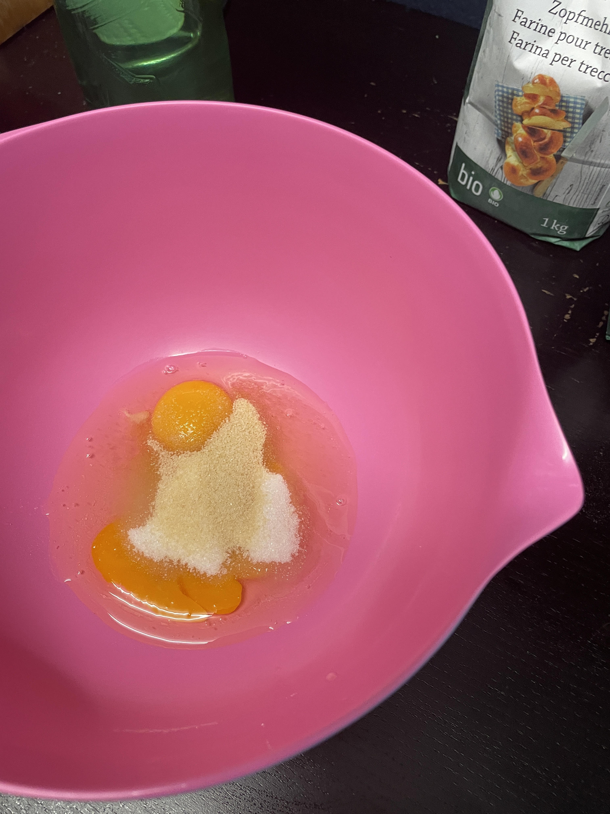
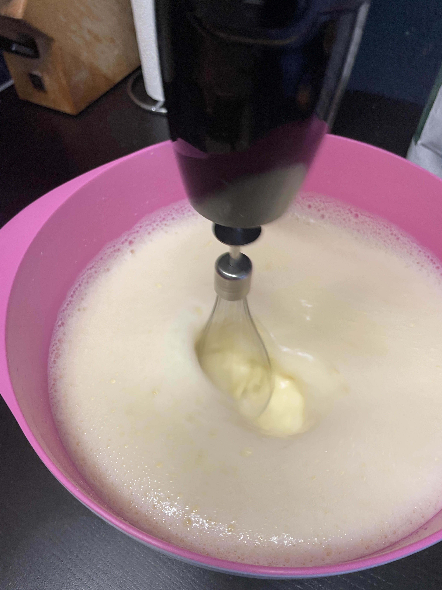
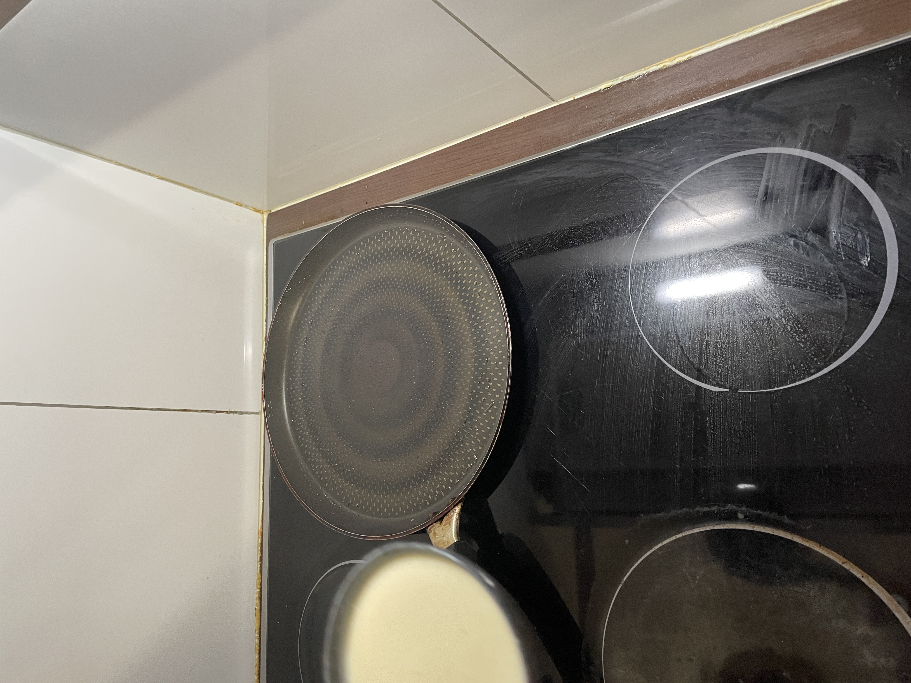
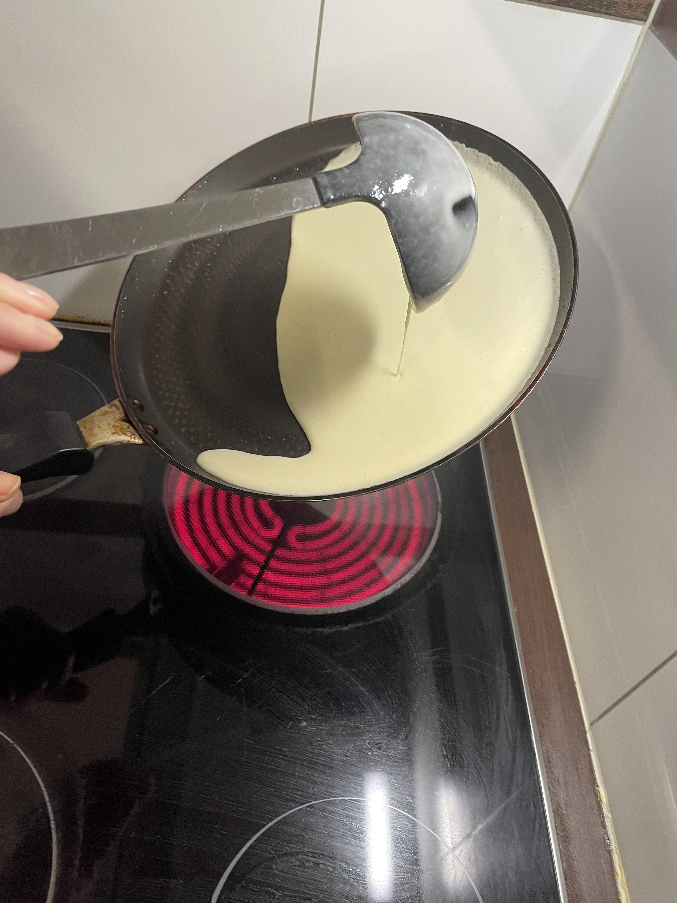
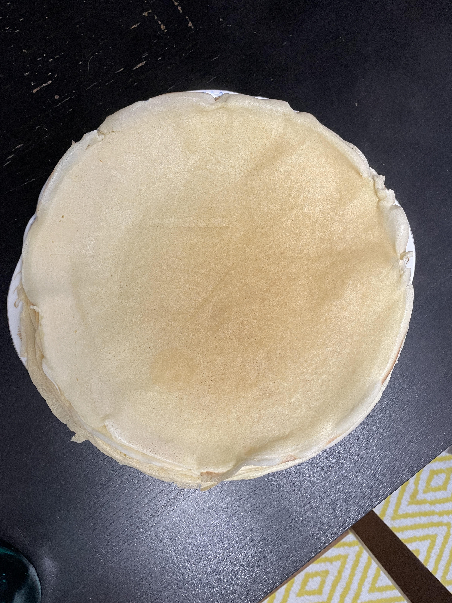
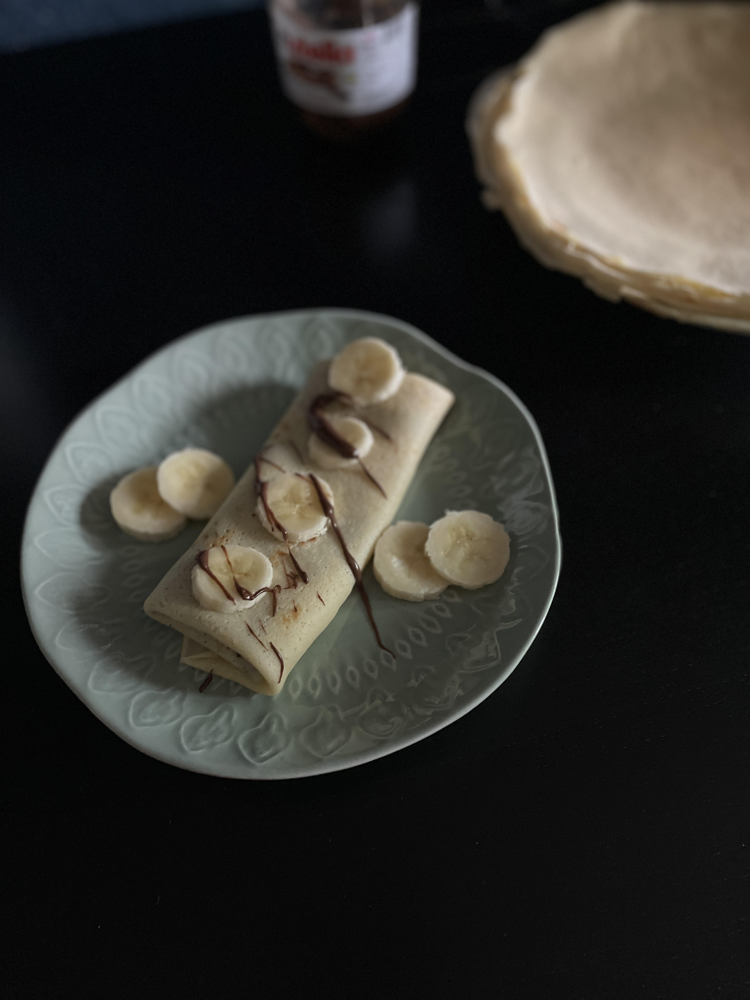

2 eggs - ca. 300g flour - ca. 2 T. liquid (can be water, oat milk etc.) - pinch of salt - 3 T. sugar - pack of vanilla sugar
Crack two eggs and put them into a bowl. Add 3 Tablespoons of sugar. Add a small pack of vanilla sugar and a pinch of salt. Add ca. 150ml of your Liquid.
This could be water, oat milk or anything else. I typically use sparkling water. Make sure to add as much as feels right to you, there is not exact measurement.

Take a whisk and start whisking. Carefully add as much flour as needed, to remove clumps.
Whisk the dough until its fluid and doesnt have any clumps anymore and looks light enough.

Prepare your pan by heating it well, then add a tiny bit of Oil and spread it around the pan with a paper roll.
Make sure to not use too much oil. You dont want the pan to be fully covered in oil, you just want it to have a bit oil so the crêpes dont stick to the bottom of the pan.

Once the pan is heated and oiled, grab a trowel and take some of the dough, spreading it into the pan. make sure to turn the pan at an angle so the dough gets spread nicely.
Once the very edges of the dough get baked and arent liquid anymore, slightly loosen them with a spatula to ensure no sticking on the pan. If the bottom side looks ready, flip the crêpe and repeat the process. Once both sides are baked perfectly, grab a plate and place your pancake.
Repeat this process with the rest of the dough, until you used it all up.

And there you go! You now have a few crêpes. Now you can customize and fill them in anyway you want to. You can fill them with Nutella, Lemons and Sugar, Yoghurt, Strawberries and Cream etc.
I like filling mine either with Nutella or Lemons and Sugar, but this time i tried filling it with Nutella and Bananas and it was really good!

Once the pan is heated and oiled, grab a trowel and take some of the dough, spreading it into the pan. make sure to turn the pan at an angle so the dough gets spread nicely.
Once the very edges of the dough get baked and arent liquid anymore, slightly loosen them with a spatula to ensure no sticking on the pan. If the bottom side looks ready, flip the crêpe and repeat the process. Once both sides are baked perfectly, grab a plate and place your pancake.
Repeat this process with the rest of the dough, until you used it all up.
